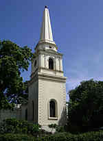
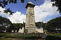
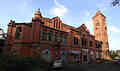

|
|
British administrative offices

Fort St George
Fort St George (or historically, White Town) is the name of the first British fortress in India, founded in 1639 at the coastal city of Madras (modern city of Chennai). This fort was completed on April 23, coinciding with St. George's Day, celebrated in honour of St. George, the patron saint of England. The fort, christened Fort St. George faced the sea and a few fishing villages, and soon became the hub of merchant activity. It gave birth to a new settlement area called George Town (historically referred to as Black Town), which grew to envelop the villages and led to the formation of the city of Madras. The fort is a stronghold with 6 meter high walls that withstood a number of assaults in the 18th century. Today, the Fort serves as the administrative headquarters for the legislative assembly of Tamil Nadu state, and still houses a garrison for troops in transit to various locations at South India and the Andamans. The Fort Museum contains many relics of the Raj, including portraits of many of the Governors. Other monuments present inside the fort are St. Mary's Church, the oldest Anglican church in India, and Wellesley House, which holds the paintings of the Governor of the Fort and other high officials of the Regime.

Victory War Memorial
Victory War Memorial, formerly called the Cupid's bow, is a memorial in Chennai, India, originally constructed to commemorate the victory of the allied armies during World War I (1914–1918) and later became the victory war memorial for World War II (1939–1945) in the memory of those from the Madras presidency who lost their lives in the wars. Later addition includes inscriptions of 1948 Kashmir Aggression, 1962 War with China and the Indo-Pakistan War. The Victory War Memorial is located to the south of Fort St. George and marks the beginning of the 13-km-long Marina beach. It is a circular rock and marble structure built in the area that formerly housed the coastal belfry.

The Victoria Public Hall
Victoria Public Hall, or the Town Hall, is a historical building in Chennai, named after Victoria, Empress of India. It is one of the finest examples of British architecture in Chennai and was built to commemorate the golden jubilee of Queen Victoria. The hall, an example of the Indo-Saracenic architecture, was designed by Robert Fellowes Chisholm (1840-1915) in the Romanesque style and was built by Namperumal Chetty between 1888 and 1890. It was opened to public by Lord Connemara in 1887, although another version suggests that Sir Mountstuart Elphinstone Grant Duff, the governor of Madras during 1886-1890, declared open the hall. In January 1888, a citizens' meeting decided to name the hall after Queen Victoria. The then Municipal Corporation President Sir A.T. Arundale took the initiative. It served as a theatre and public assembly room in the late 19th century and the early 20th century. It now houses the South Indian Athletic Association Club.

Madras High Court
The Madras High Court is the highest court in the Indian state of Tamil Nadu located at Chennai formerly known as Madras. The court is one of the three High Courts in India established at the Presidency Towns by Letters patent granted by Her Majesty Queen Victoria, bearing date 26 June 1862. It exercises original jurisdiction over the city of Chennai and appellate jurisdiction over the entire state as well as extraordinary original jurisdiction, civil and criminal, under the Letters Patent and special original jurisdiction for the issue of writs under the Constitution of India.
go to top
Home
Developed by SUGATO CHAKRABORTY (currently pursuing B.Tech in CSE from West Bengal University of Technology, developer at Boscom Software,2014)
|
|